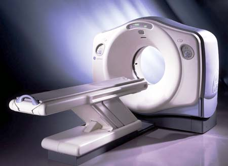

GEMS Proprietary Class: A
Direction 5117807-800, Rev# A
GEMS Proprietary Class: A |
GE scanners are designed to be safely operated only when all system covers are in place. Removal of a cover for any reason defeats the protection they provide, and potentially exposes patients and operators to hazards. If any of the covers should become damaged, you should contact your local GE Sales or Service representative immediately for replacement or repair. Only qualified service personnel trained in the service and operation of this scanner should remove any cover or service this equipment.
Illustration 1: LightSpeed System

Safety features have been incorporated into the design for everyone’s protection. Equipment covers remain the primary means of protection to patients, operators and service personnel. Secondary protection covers are also employed to protect service personnel.